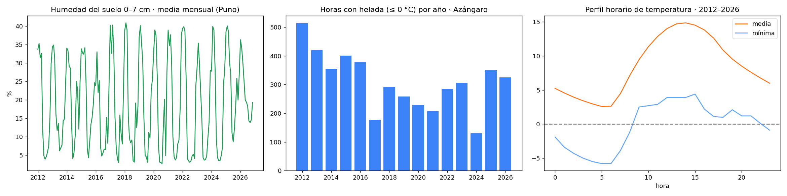
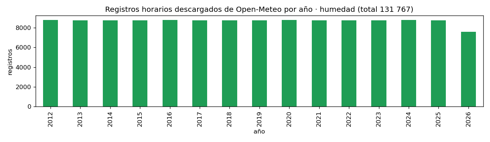
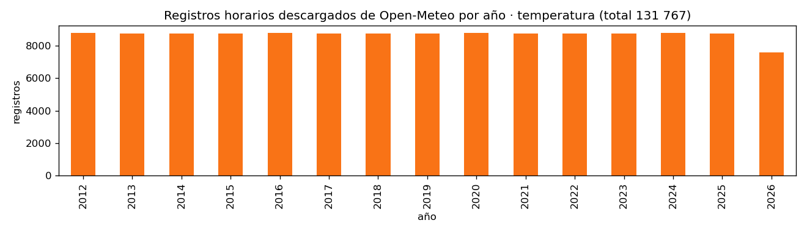

Big Data histórico · Open-Meteo 2012–2026
263 534 registros reales descargados de la API Open-Meteo: 131 767 por dimensión. No son datos sintéticos: son 1 447 registros recientes de la Forecast API (los que alimentan el streaming y el modelo U2) más 130 320 horas históricas de la Historical Weather API (reanálisis ERA5 / ERA5-Land), procesadas con Spark en arquitectura medallón.
| Dimensión | Forecast API · últimos 60 días | Historical API ERA5 · 2012-01-01 → 2026-11-12 | Total descargado |
|---|---|---|---|
| Humedad · José (Puno, −15.84, −70.02) | 1 447 | 130 320 | 131 767 |
| Temperatura · Mijael (Azángaro, −14.91, −70.19) | 1 447 | 130 320 | 131 767 |
| Total | 2 894 | 260 640 | 263 534 |
Pipeline (cuaderno pyspark/sesiones/Historico_BigData/U3_BigData_Historico_OpenMeteo.ipynb)
- Bronze: un CSV por año y dimensión (30 archivos), descarga idempotente con reintentos (
archive-api.open-meteo.com). - Silver: Spark tipa, valida rangos (humedad 0–100 %, temperatura −40 a 40 °C) y elimina duplicados por fecha con
Window + row_number: 0 nulos, 0 fuera de rango, 0 duplicados en 130 320 filas por dimensión. - Gold: Parquet particionado por
anioymes(179 archivos por dimensión, 1,45 MB y 1,22 MB). - Análisis: humedad mensual del suelo, horas de helada por año y perfil horario de temperatura.
- Modelos +1 h (MLlib): partición cronológica (entrenamiento hasta 2022: 96 408 filas; validación 2023–2024; prueba desde 2025: 16 343 filas).
Spark corre con local[*] (8 núcleos de la laptop) y procesa todo en unos 3,5 minutos.

Resultados de los modelos con el histórico completo
| Dimensión | Persistencia | Regresión lineal | Gradient Boosted Trees | Lectura |
|---|---|---|---|---|
| Humedad del suelo 0–7 cm (pp) | 0,69 | 0,72 | 0,92 | La persistencia gana: el suelo cambia muy poco entre horas |
| Temperatura a 2 m (°C) | 1,64 | 1,00 | 0,88 | GBT reduce el error un 46 % |
Catorce años de datos confirman lo que se ve en vivo: la temperatura se puede anticipar mejor que repitiendo el último valor; la humedad del suelo no.
Cómo se muestra en el sistema
- Cuadernos U2 (sección 2.1b): cargan la Forecast API y el histórico Gold y muestran «REGISTROS DESCARGADOS DE LA API OPEN-METEO: 131 767».
- PostgreSQL: tabla
api_descargas(dimensión, fuente, registros, desde, hasta). - Grafana: panel «Descargados de Open-Meteo» en el tablero de presentación, para José y para Mijael.


Aclaraciones
- El archivo histórico no tiene la capa de suelo 0–1 cm que usa el tiempo real; la más cercana es 0–7 cm. Por eso el histórico de humedad no se mezcla con el entrenamiento del modelo de streaming: se usa para volumen, análisis y el modelo propio de este cuaderno.
- El histórico se publica con unos días de retraso; por eso termina el 12-nov-2026.
- No modifica los datos de U1 ni de U2: todo se guarda en
pyspark/sesiones/Historico_BigData/(el Bronze no se sube a git; se vuelve a descargar conejecutar_historico_bigdata.bat).